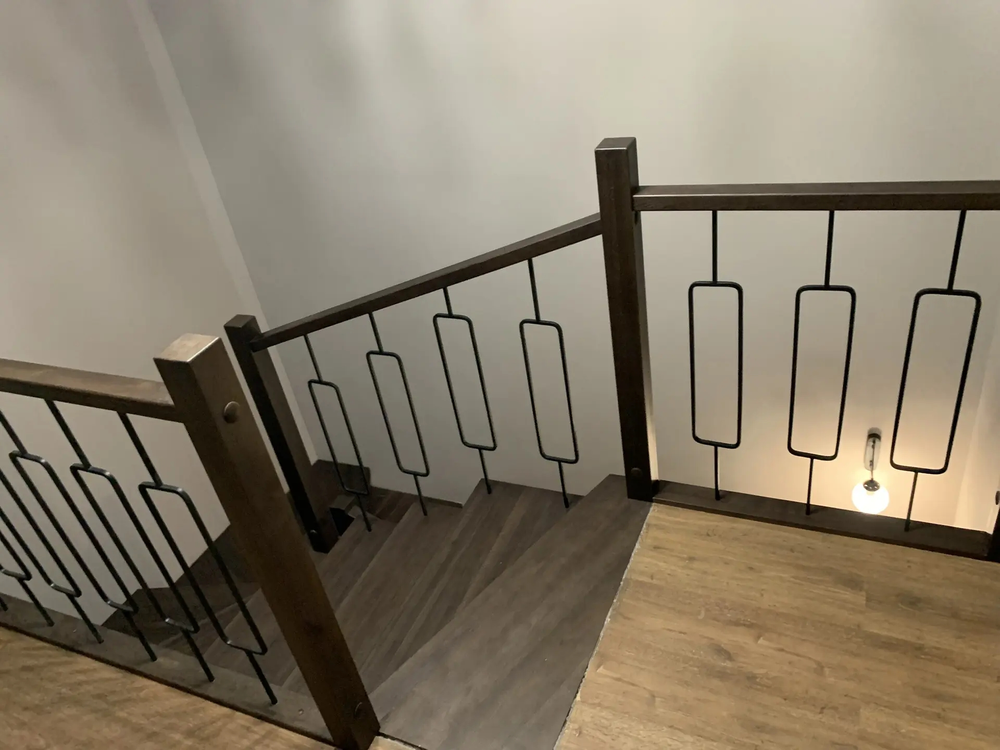
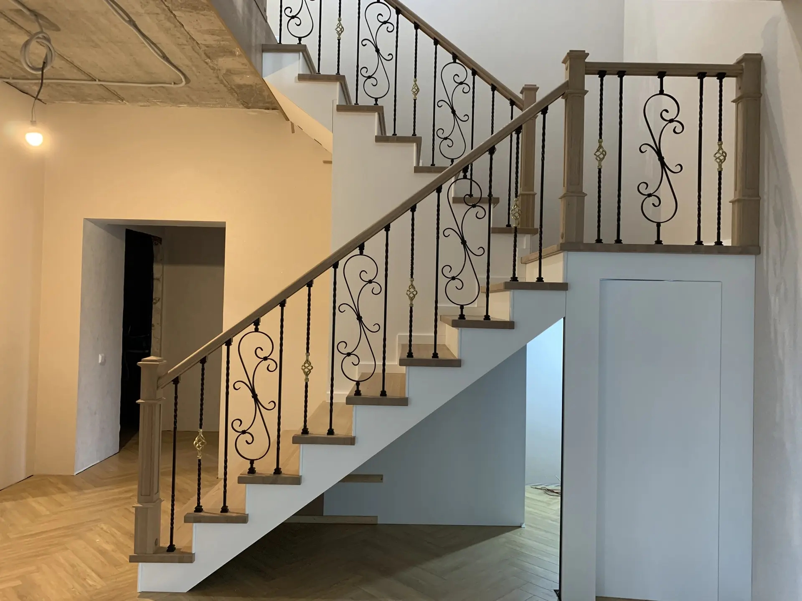
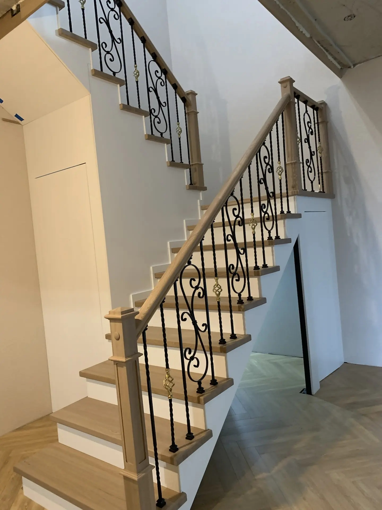
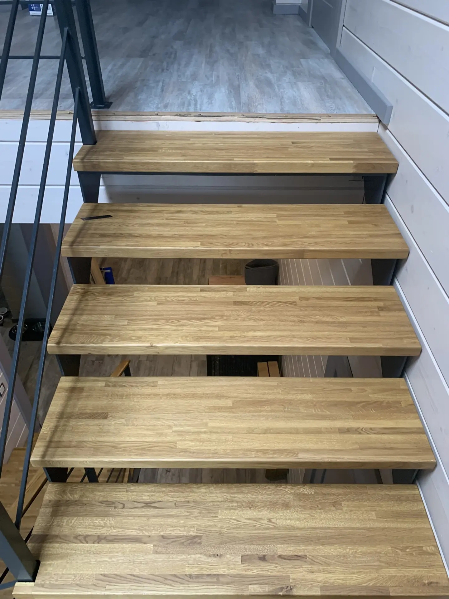
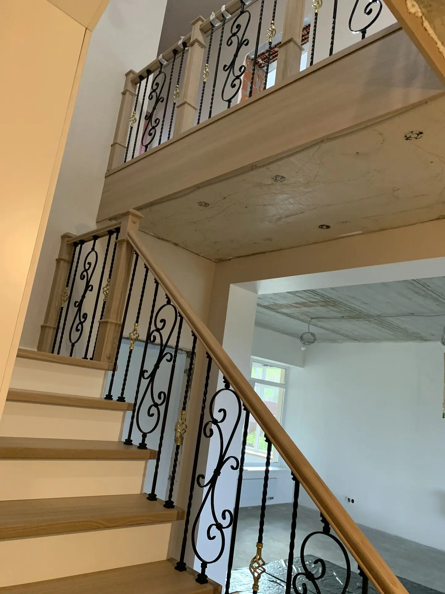
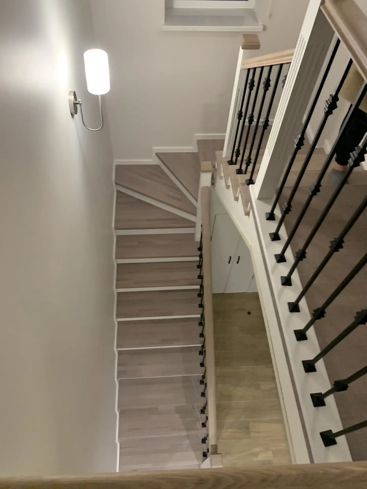
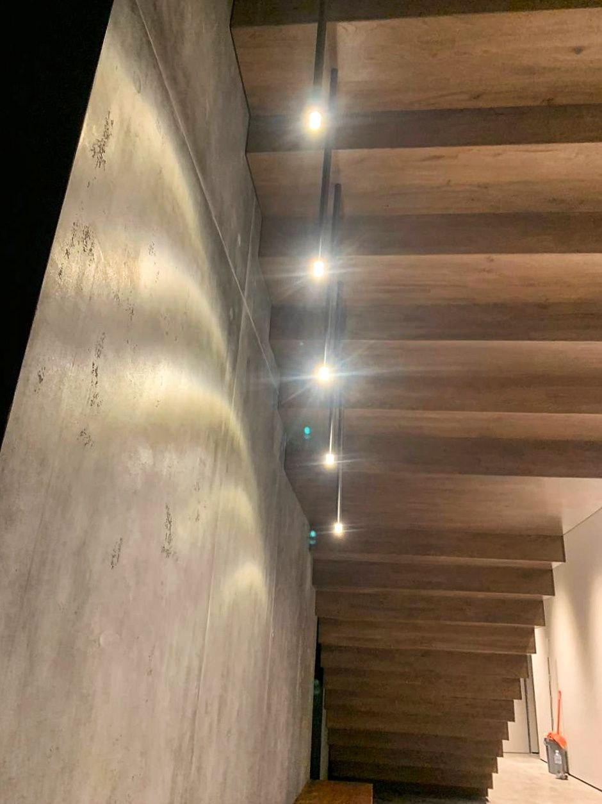
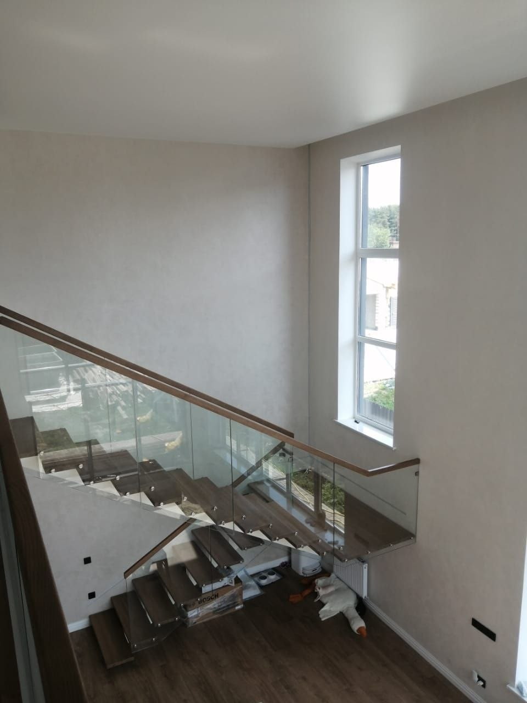
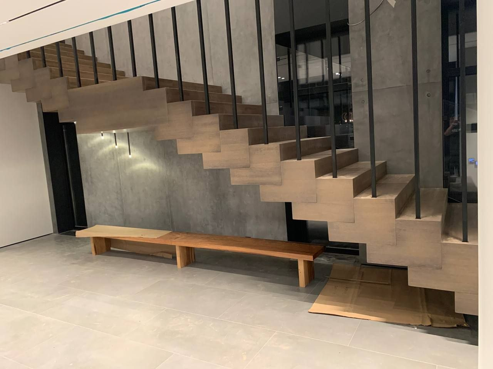

Журнал мастерской
Статьи о лестницах
Разбираем этапы проекта, выбор древесины, замеры, отделку и ограждения. Материалы помогут подготовиться к разговору со специалистом и лучше представить будущую лестницу.

Этапы проекта
Когда устанавливают металлический каркас лестницы?
Металлический каркас обычно планируют до чистовой отделки, а деревянную облицовку устанавливают после завершения основных отделочных работ.
Читать статью →
Материалы
Как выбрать древесину для отделки лестницы?
Дуб, ясень, лиственница и американский орех отличаются оттенком и рисунком. Выбирать породу удобнее по образцам в сочетании с интерьером.
Читать статью →
Замер и проект
Зачем нужен замер лестницы на объекте?
Точный обмер учитывает геометрию проёма и фактические условия дома. Это основа для проекта, расчёта и согласования деталей до производства.
Читать статью →
Конструкция
Открытая или закрытая лестница: в чём разница?
Открытый марш оставляет просветы между ступенями, а закрытый дополняют подступенниками. Оба решения подбирают под проект и интерьер.
Читать статью →
Размеры
Сколько места занимает лестница в доме?
Для предварительной оценки важны высота этажа, ширина марша, глубина ступени, форма и размеры проёма.
Читать статью →
Планирование
Когда начинать планировать лестницу в новом доме?
Предварительную геометрию полезно согласовать до устройства проёма и чистовой отделки. Это помогает увязать лестницу с планировкой.
Читать статью →
Ограждения
Как выбрать ограждение и поручень для лестницы?
Дерево, металл и стекло создают разное визуальное впечатление. Тип ограждения и способ его крепления согласуют с конструкцией марша.
Читать статью →
Отделка бетона
Как проходит обшивка бетонной лестницы деревом?
Работа начинается с проверки геометрии бетонного основания. Ступени, подступенники и боковые детали изготавливают по размерам конкретного объекта.
Читать статью →
Освещение
Какие варианты подсветки ступеней можно предусмотреть?
Светильники можно разместить в стене, под ступенью или в других элементах. Проводку и управление лучше предусмотреть заранее.
Читать статью →
Уход
Как ухаживать за деревянными ступенями?
Уход зависит от финишного покрытия. Используйте рекомендации производителя масла, лака или краски, выбранных для конкретной лестницы.
Читать статью →
Стоимость и комплектация
Из чего складывается стоимость лестницы на заказ?
Геометрия, каркас, древесина, ограждение и монтаж — что уточнить, чтобы сравнивать сметы на одинаковых условиях.
Читать статью →Планировка
Как выбрать форму лестницы для дома?
Сравниваем прямой, Г- и П-образный марш и объясняем, что проверить на плане до замера.
Читать статью →